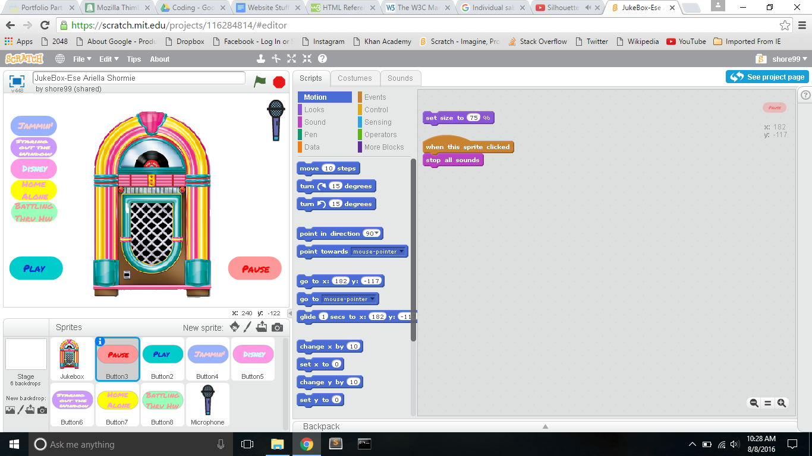

This is the Jukebox Project I worked with my fellow SIP members. For this project we created a playlist based on the user's mood using Scratch. Here's the link to the project.
This is the Obamicon Project. My partner and I created a version of Obama's famous 2008 campaign posters using Python, but instead of using a photo of President Obama, we used a photo of Malala.

Here's a complete list of projects I've worked on this summer: